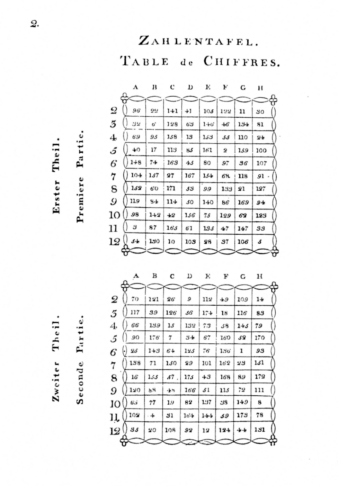
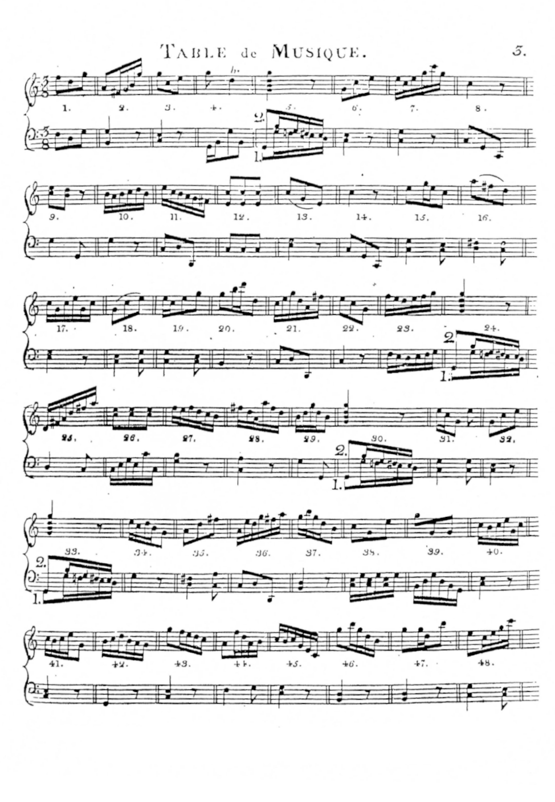
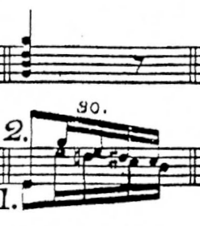
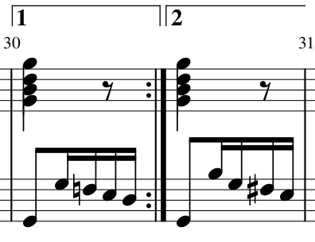
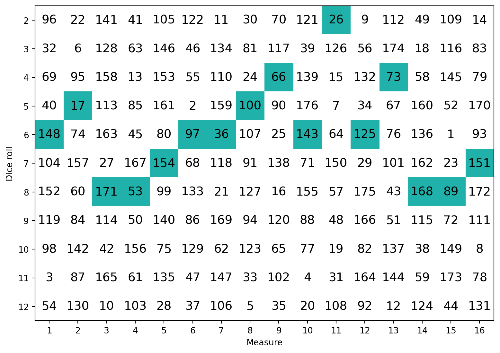
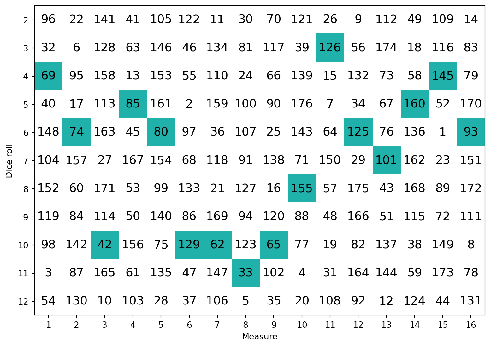
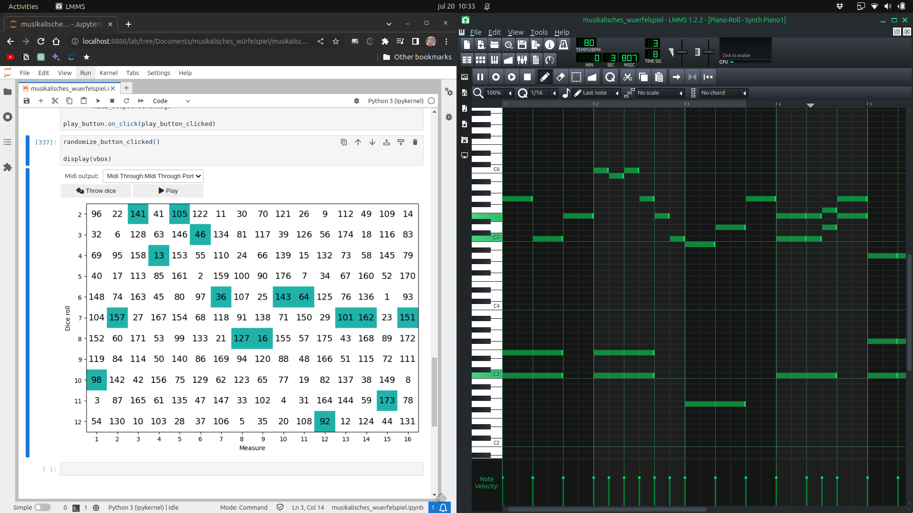

from matplotlib.colors import ListedColormap
from IPython.display import display
import matplotlib.pyplot as plt
import ipywidgets as widgets
import numpy as np
import mido
import timeIn generative AI, music composition is one of the areas in which there has been remarkable progress. Models like Magenta’s Music Transformer, MuseNet, AIVA, and Riffusion are able to create musical pieces, further blurring the line between human and machine creativity.
Perhaps surprisingly, the idea of using algorithms for composing music can be traced back to as early as the second half of the 18th century. During this period, the musical dice game, or “Musikalisches Würfelspiel”, gained popularity in Western Europe. This game allowed anyone, regardless of musical expertise, to compose by rolling dice and consulting charts to pick musical elements and craft original compositions.
While various musical dice games were published during this period, one of the most famous instances is attributed to Wolfgang Amadeus Mozart. It is unclear whether it was Mozart whom actually created this particular version, as it was released by his publisher posthumously. It’s for the sake of convenience that I’ll refer to this version as Mozart’s musical dice game, even though it’s uncertain whether he was the actual creator.
In this blog post, we’ll explore Mozart’s musical dice game and I’ll present a Python implementation. Using this implementation, we’ll be able to generate MIDI messages for playback in digital audio workstations or with MIDI instruments.
From rolling dice to a musical composition
To play Mozart’s musical dice game, we’d need the following:
- two six-sided dice
- a two-part reference chart (Zahlentafel / Table de Chiffres)
- 176 music fragments (Table de Musique of which only the first page is shown below)


The numbers in the reference chart (the first image) refer to the music fragments (in the second image). Only the first page containing the first 48 music fragments is shown. You can find the full document containing both the reference chart and all 176 music fragments here.
The steps involved in creating a composition are as follows:
Step 1: Roll a pair of dice 16 times
For each roll, note the sum (ranging from 2 to 12) obtained from the two six-sided dice.
Step 2: Select the corresponding measures from the reference chart and assemble the musical composition.
Using the reference chart and the 176 musical fragments, look up the pre-composed music fragment associated with each of your 16 rolls. Each of these fragments becomes a measure in your composition.
The first 8 measures will need to be played twice. For this reason you can add the repeat sign 𝄇 to the 8th measure. The music fragments under column H (30, 81, 24, 100, 107, 91, 127, 94, 123, 33, and 5) all contain a second variation that needs to be played the second time. For instance, music fragment 30 looks like this:

You can see that the left hand staff for this fragment contains two variations. Variation 1 is played the first time, variation 2 the second time. A cleaner way to represent this is by using volta brackets.

The last 8 measures aren’t repeated so you can add the final barline symbol 𝄂 to the last measure.
Congratulations! You are now a composer.
Throwing dice and looking up fragments repeatedly is boring. However, before automating this with Python, there’s one more thing left to explain.
What’s MIDI?
MIDI stands for “Musical Instrument Digital Interface”. It’s both a file format and a protocol used to communicate with and control various musical instruments, computers, and other electronic devices. MIDI data does not contain actual audio; instead, it consists of instructions that tell devices what sound to produce.
MIDI messages include information such as note-on and note-off commands, which indicate when a musical note should start and stop playing, as well as data for controlling parameters like pitch, velocity, tempo, and volume.
We’ll use MIDI to play back Mozart’s musical dice game compositions on a digital piano and a digital audio workstation (DAW). The mido library is used to work with MIDI data in Python.
Fun fact: The first version of the MIDI specification was published in August, 1983, which means the standard will be 40 years old next month!
Importing libraries
We’re now ready to implement Mozart’s musical dice game using Python. Let’s start by importing the necessary modules:
Note how we import the aforementioned mido module.
Reference chart and dice rolls
The two part reference chart is represented by a 11x16 numpy array. The numbers in the array indicate the music fragment to be played for each combination of dice rolls.
number_table = np.array([
[ 96, 22, 141, 41, 105, 122, 11, 30, 70, 121, 26, 9, 112, 49, 109, 14],
[ 32, 6, 128, 63, 146, 46, 134, 81, 117, 39, 126, 56, 174, 18, 116, 83],
[ 69, 95, 158, 13, 153, 55, 110, 24, 66, 139, 15, 132, 73, 58, 145, 79],
[ 40, 17, 113, 85, 161, 2, 159, 100, 90, 176, 7, 34, 67, 160, 52, 170],
[148, 74, 163, 45, 80, 97, 36, 107, 25, 143, 64, 125, 76, 136, 1, 93],
[104, 157, 27, 167, 154, 68, 118, 91, 138, 71, 150, 29, 101, 162, 23, 151],
[152, 60, 171, 53, 99, 133, 21, 127, 16, 155, 57, 175, 43, 168, 89, 172],
[119, 84, 114, 50, 140, 86, 169, 94, 120, 88, 48, 166, 51, 115, 72, 111],
[ 98, 142, 42, 156, 75, 129, 62, 123, 65, 77, 19, 82, 137, 38, 149, 8],
[ 3, 87, 165, 61, 135, 47, 147, 33, 102, 4, 31, 164, 144, 59, 173, 78],
[ 54, 130, 10, 103, 28, 37, 106, 5, 35, 20, 108, 92, 12, 124, 44, 131]
])Let’s now define a function that displays the reference chart and dice rolls.
def plot_number_table(number_table, dice_rolls=None):
highlight = np.zeros((11, 16))
if dice_rolls is not None:
row_indices = dice_rolls - 2
column_indices = np.arange(16)
highlight[row_indices, column_indices] = 1
plt.figure("Musikalisches Würfelspiel", figsize=(9.6, 7.2))
plt.imshow(highlight, cmap=ListedColormap(["white", "lightseagreen"]))
for y in range(number_table.shape[0]):
for x in range(number_table.shape[1]):
plt.text(x, y, '%d' % number_table[y, x], fontsize=14,
horizontalalignment='center', verticalalignment='center')
plt.xticks(list(range(0,16)), list(range(1, 17)))
plt.yticks(list(range(0,11)), list(range(2, 13)))
plt.xlabel("Measure")
plt.ylabel("Dice roll")
plt.show()This function takes two parameters: the reference chart and the dice rolls. If the dice rolls are not provided, the reference chart is displayed without highlighting any cells.
Before calling this function, let’s simulate rolling two dice 16 times. We do that using the following code:
# Throw two dice 16 times
dice_rolls = np.sum(np.random.randint(1, 7, size=(2, 16)), axis=0)You might be wondering why we don’t simply write:
dice_rolls = np.random.randint(2, 13, size=(1, 16))The reason is that this would result in values being drawn from a discrete uniform distribution. The sum of a roll of two dice however isn’t uniformly distributed. The probability distribution of the sum of two dice is instead given by:
\[p(x) = \begin{cases} \frac{x - 1}{36} & \text{if $x \in \{2, 3, 4, 5, 6, 7\}$}\\ \frac{13 - x}{36} & \text{if $x \in \{7, 8, 9, 10, 11, 12\}$}\\ 0 & \text{otherwise} \end{cases} \]
This may be called a discrete triangular distribution. It’s perfectly fine to draw from either distribution, but the triangular distribution is more akin to rolling actual dice.
Let’s now display the reference chart and the dice rolls.
plot_number_table(number_table, dice_rolls)
Music fragments
I used MuseScore to digitize all music fragments into one MIDI file. Each fragment consists of one measure, except fragments 30, 81, 24, 100, 107, 91, 127, 94, 123, 33, and 5. They contain a second variation which has been put into a separate measure immediately following the measure that contain the first variation. This gives us a total of 187 measures. Let’s now read in this MIDI file.
midi_file = mido.MidiFile('musikalisches_wuerfelspiel.mid')As described above, a MIDI file consists of MIDI messages. The following function extracts the MIDI messages between two time stamps. It is used to extract the MIDI messages corresponding to a single measure. There are different kinds of messages, but we are only interested in the note_on and note_off messages.
def get_fragment(midi_file, time_start, time_end):
proc_time = 0.0
for msg in midi_file:
if not isinstance(msg, mido.MetaMessage) and msg.type != 'control_change':
proc_time += msg.time
if proc_time >= time_start and proc_time <= time_end:
yield msg We use MIDI control change messages to initialize the receiving instrument or DAW. The following function extracts them from our MIDI file.
def get_control_change_messages(midi_file):
for msg in midi_file:
if not isinstance(msg, mido.MetaMessage) and msg.type == 'control_change':
yield msgThe following helper function returns the index of the measure that contains a given fragment. Because some fragments are split into two measures (the ones with a variation, the 8th dice roll), the fragments that come after these all shift one up.
def get_measure_index(number_table, number):
eighth_column = number_table[:, 7] # 7 represents the 8th column
count = np.sum(eighth_column < number)
return number + countThe following function first generates the control change messages, and then the MIDI messages for the fragments corresponding to each dice roll.
It starts by calculating the duration of one measure and uses this to determine the time stamps for the start and end of each measure. It then extracts the MIDI messages for each fragment and yields them.
def get_dice_roll_fragments(midi_file, number_table, dice_rolls):
measure_duration = sum([msg.time for msg in midi_file if not isinstance(msg, mido.MetaMessage)]) / (number_table.shape[0] * (number_table.shape[1]+1))
measures = number_table[dice_rolls - 2, np.arange(16)]
yield from get_control_change_messages(midi_file)
for i in range(2): # repeat measures 1 to 8
for j in range(0, 8):
index = get_measure_index(number_table, measures[j]) + (i if j == 7 else 0)
yield from get_fragment(midi_file, measure_duration * (index-1), measure_duration * index)
for j in range(8, 16):
index = get_measure_index(number_table, measures[j])
yield from get_fragment(midi_file, measure_duration * (index-1), measure_duration * index)The next function calculates the time stamps for the start of each MIDI message. It then waits until the current time is equal to or greater than the time stamp for the next MIDI message before yielding it. We use this function to play the MIDI messages at the correct speed to a MIDI output port.
def play_dice_roll_fragments(midi_file, number_table, dice_rolls):
# generate all MIDI messages in advance
messages = list(get_dice_roll_fragments(midi_file, number_table, dice_rolls))
start_time = time.time()
input_time = 0.0
for msg in messages:
input_time += msg.time
playback_time = time.time() - start_time
duration_to_next_event = input_time - playback_time
if duration_to_next_event > 0.0:
time.sleep(duration_to_next_event)
yield msgBuilding a GUI
Finally, we can create a simple GUI that allows us to generate compositions and send the MIDI messages to a DAW or MIDI instrument.
output_dropdown = widgets.Dropdown(
options=np.unique(mido.get_output_names()),
description='MIDI output:',
disabled=False,
)
randomize_button = widgets.Button(icon='dice', description='Throw dice')
play_button = widgets.Button(icon='play', description='Play')
output = widgets.Output()
hbox = widgets.HBox([randomize_button, play_button])
vbox = widgets.VBox([output_dropdown, hbox, output])One button is to roll the dice and the other is to play the composition. The output is a plot of the dice rolls. We use a dropdown to select which MIDI output port to use.
def randomize_button_clicked(b=None):
global dice_rolls
dice_rolls = np.sum(np.random.randint(1, 7, size=(2, 16)), axis=0)
with output:
output.clear_output(wait=True)
plot_number_table(number_table, dice_rolls)
randomize_button.on_click(randomize_button_clicked)
def play_button_clicked(b):
midi_output = mido.open_output(output_dropdown.value)
for msg in play_dice_roll_fragments(midi_file, number_table, dice_rolls):
midi_output.send(msg)
play_button.on_click(play_button_clicked)Finally we display the GUI.
randomize_button_clicked()
display(vbox)
Sending MIDI messages to a DAW
Now we can send the MIDI messages to a DAW to play (and optionally record) our masterpieces. I’m using the free DAW LMMS here but any DAW should work.

If you record the MIDI messages, make sure you set the tempo to 80 BPM and the time signature to 3/8 so the notes get quantized correctly.
Just listen to this gem!
Beautiful, wouldn’t you agree?!
A piano performance
Let me perform a composition for you on my piano.
Not only am I a composer, I’m a performer too. Carnegie Hall, here I come! (Don’t mind the MIDI cable running from my laptop to the piano.)
Conclusion
Whether or not the pieces created using this method can be called original is a matter of perspective.
Despite the random assembly, the musical dice game was designed in such a way that the chord progressions and harmonic structure would remain consistent throughout the pieces. This ensures that the musical phrases fit together harmoniously, creating a sense of coherence and musical flow. Furthermore, Mozart (or the actual composer) likely incorporated musical rules and guidelines while creating the precomposed measures. These rules would ensure that the resulting compositions maintain a certain level of musical quality and avoid dissonance or jarring transitions.
The resulting compositions may sound pretty good, but after a while they start to become repetitive. Nonetheless, Mozart’s Musikalisches Würfelspiel and similar musical dice games remain a fascinating historical example of how composers experimented with generative techniques long before the advent of computers and sophisticated software.
If you want to create your own pieces, you can find the code in the following GitHub repository:

Happy “composing”!